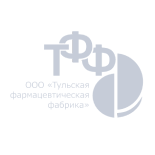

Услуги Техно-аир
Мы предоставляем нашим заказчикам полный сервис гарантийного и послегарантийного обслуживания поставляемого нами оборудования. Вы можете обратиться к нам по любым вопросам, касающимся производства и использования сжатого воздуха и получить техническую поддержку в реализации ваших планов экономии финансов предприятия.

Наиболее частые причины ремонта:
- Несоблюдение правил эксплуатации
- Пренебрежение плановым техническим обслуживанием
- Использование некачественных материалов и масла
- Тяжелые условия эксплуатации узлов компрессора
Компания «ТЕХНО-АИР»:
Обладает технологией завода-изготовителя по выставлению зазоров и их контролю по итогам капитального ремонта
Использует только оригинальные запасные части и специальный инструмент:
- индукционный нагреватель – обеспечивает правильную посадку подшипников;
- съемник подшипников – удобная и быстрая разборка без нарушения геометрии вала ступени;
- микрометр – жесткий контроль зазоров в ступени;
Несет ответственность за капитальный ремонт – гарантия 1 год
Имеет огромный опыт в проведении этих работ
Имеет специально оборудованные стенды для проведения работ по капитальному ремонту.
С нами работают
- 
Оставьте заявку
Если вы хотите задать вопрос или уточнить детали - заполните форму. Мы оперативно ответим на все ваши вопросы.
Капитальный ремонт винтового компрессора
Ступень сжатия – это сердце компрессора, и эффективность её работы определяет удельное энергопотребление. Основным элементом в составе ступени сжатия является винтовая пара.
При работе винтовой пары ведущий ротор крутит ведомый, но непосредственного взаимодействия между ними нет. Ведущий ротор передает вращательный момент на ведомый через так называемый масляный клин (функции масла: создание масляной пленки; обеспечение зазора между роторами винтовой группы; смазка подшипников рабочего элемента и самих роторов; отвод тепла).
Для нормальной работы ступени, а именно, для необходимой производительности и соответствующего отвода тепла, которое образуется в процессе сжатия воздуха, необходимо соблюдение осевых и радиальных зазоров между роторами и корпусом ступени. Обеспечение данных зазоров возможно только с использованием технологии производителя.
Компания «ТЕХНО-АИР»:
Обладает технологией завода-изготовителя по выставлению зазоров и их контролю по итогам капитального ремонта
Использует только оригинальные запасные части и специальный инструмент:
- индукционный нагреватель – обеспечивает правильную посадку подшипников;
- съемник подшипников – удобная и быстрая разборка без нарушения геометрии вала ступени;
- микрометр – жесткий контроль зазоров в ступени;
Несет ответственность за капитальный ремонт – гарантия 1 год
Имеет огромный опыт в проведении этих работ
Имеет специально оборудованные стенды для проведения работ по капитальному ремонту.
Только применение оригинальных запасных частей, специального инструмента и технологии завода-изготовителя может гарантировать долгую, надежную и эффективную работу как самой ступени сжатия, так и компрессора в целом.
Капитальный ремонт компрессора требует значительных единовременных затрат со стороны владельца. Конечно, возникает соблазн получения альтернативных предложений, которых довольно много на рынке – от откровенно недостойных до кажущихся весомыми. Именно поэтому мы предлагаем Вам следующую информацию.
Неправильное выставление зазоров приводит, как минимум, к следующим последствиям:
- ступень будет работать неэффективно из-за больших перетечек сжатого воздуха;
- при работе возможны постоянные отключения по перегреву;
- велик риск «выбирания» зазора при нагрузке, т.е. уменьшения зазора между роторами и корпусом, что приводит к привариванию роторов;
- повреждение вала вследствие незнания степени посадки подшипников.
Преимущества проведения капитального ремонта силами ООО «ТЕХНО-АИР»
- Каждая используемая запасная часть — оригинальная
- Специально оборудованная мастерская
- Квалифицированные сервисные механики
- Гарантия 1 год
- 100% гарантия применения технологии производителя
Дополнительные рекомендации «ТЕХНО-АИР»
Для обеспечения первоначальной надежности и эффективности работы компрессора в целом, необходимо проводить капитальный ремонт не только ступени сжатия, но и всех важных узлов компрессора.
Для этого ТЕХНО-АИР рекомендует одновременно с капитальным ремонтом винтовой пары проводить полное техническое обслуживание компрессора (обычно ТО 8000ч.) и капитальный ремонт таких узлов как редуктор, электродвигатель, вентилятор охлаждения, контакторы.
Это позволит провести «операцию» не только на «сердце» компрессора, но и обновить всю компрессорную установку на следующий жизненный цикл.
ТО компрессорного оборудования
Проведение правильно выполненного технического обслуживания компрессора согласно рекомендациям завода-изготовителя – залог долгой работы компрессора.
Сервисные специалисты нашей компании имеют колоссальный опыт ремонта и обслуживания компрессорного оборудования. Все наши специалисты оснащены высококлассным сервисным оборудованием, регулярно проходят обучение непосредственно у производителей компрессорного оборудования.
В своей работе по обслуживанию компрессоров мы используем как оригинальные запасные части, так и высококачественные запчасти независимых поставщиков, в зависимости от пожелания клиента. Обладая таким же качеством и характеристиками, неоригинальные детали лишены в своей изначальной стоимости цены бренда, что позволяет нам снизить их цену для наших клиентов в сравнении с оригинальными материалами.
Проводя техническое обслуживание, специалисты ООО «ТЕХНО-АИР» помимо замены фильтров с маслом и переборки клапанов, так же проводят дополнительно ряд профилактических мероприятий по выявлению возможных неисправностей, а именно:
- инспекция функционирования блока управления
- очистка кожуха вентилятора электродвигателя
- проверка входного вентиляционного короба
- проверка на предмет утечек воздуха, масла
- проверка работы дренажных клапанов
- проверка работы охладителей, а именно очистка
- проверка сервисных параметров
- проверка сообщений об отключениях
- проверка состояния воздушного фильтра
- проверка состояния фильтров конвертера
- проверка уровня масла
- проверка функционирования вентилятора охладителя
- проверка электрических подсоединений
Во время каждого ТО специалисты ООО «ТЕХНО-АИР» производят SPM-вибродиагностику подшипников ступени сжатия и электродвигателя. Это позволяет нам в динамике отслеживать показатели и при наличии отклонений выявлять изношенные или неисправные элементы.
Мы стремимся, чтобы вы рассматривали ООО «ТЕХНО-АИР» как надежного партнера, которому вы можете полностью доверить заботу о своем оборудовании!
Ремонт осушителей сжатого воздуха
Осушенный сжатый воздух используется на многих предприятиях. Для его подготовки используются осушители сжатого воздуха. В основном встречаются рефрижераторные и адсорбционные осушители. Как и любое оборудование, осушители нуждаются в регулярном техническом обслуживании, но даже при соблюдении всех правил эксплуатаций может потребоваться ремонт осушителя сжатого воздуха.
Специалисты ООО «ТЕХНО-АИР» оснащены высококлассным сервисным оборудованием и осуществляют диагностику и ремонт осушителей любой сложности.
Диагностика неисправностей
В процессе работы компрессорного оборудования порой возникают некоторые технические неполадки. Компрессор может не уходить в загрузку, перегреваться, выключаться по давлению, могут появляться посторонние шумы и т.д. Если произошла подобная ситуация, необходимо провести тщательный техосмотр оборудования и выявить причину неполадок. Это позволит исключить дальнейшие аварии и восстановить бесперебойную работу производственного процесса.
За годы работы специалисты ООО «ТЕХНО-АИР» сталкивались с огромным количеством неисправностей, поэтому у нас есть опыт в решении задач любой сложности.